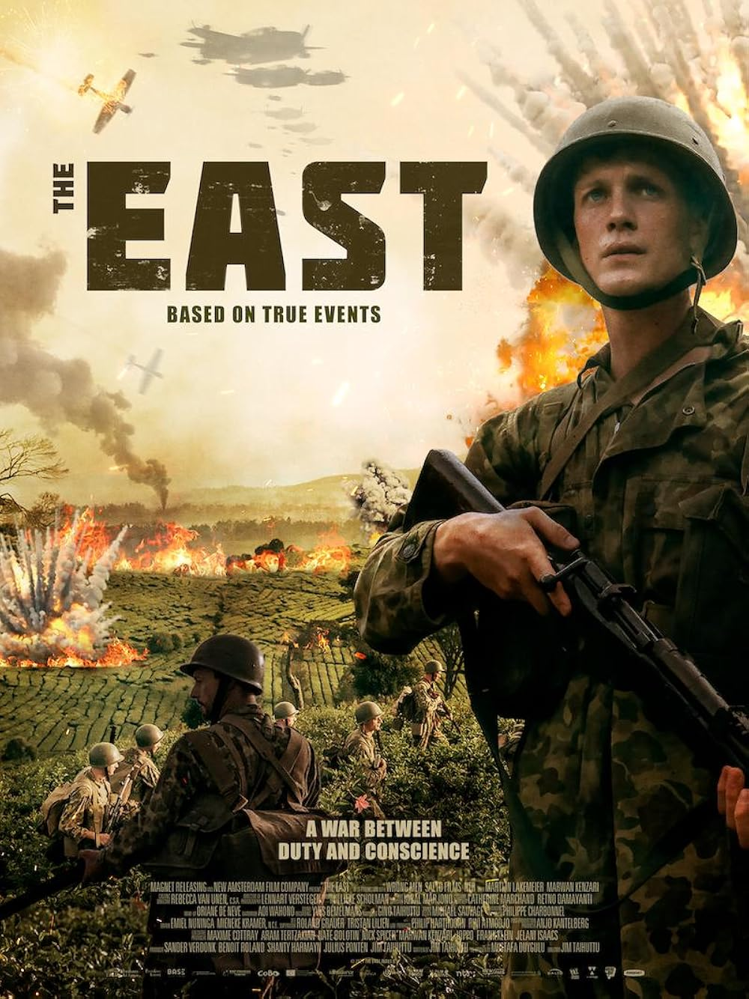
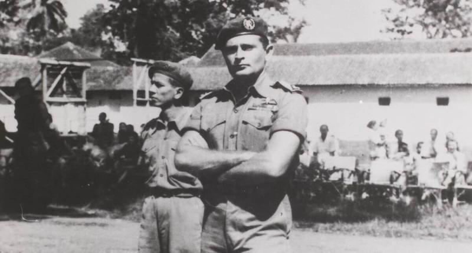
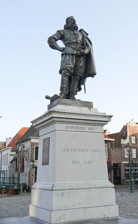
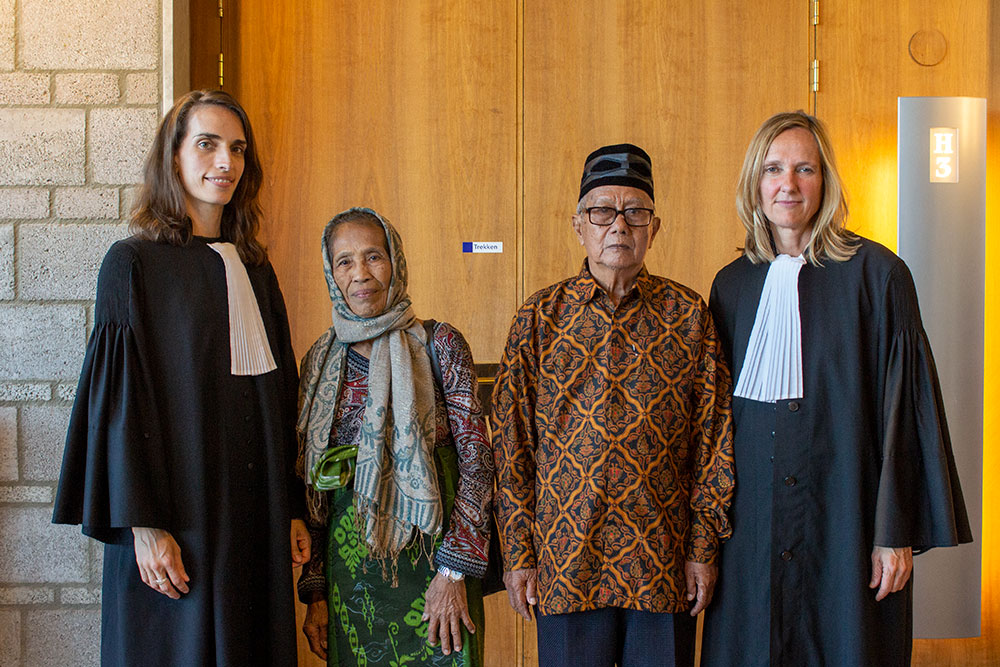
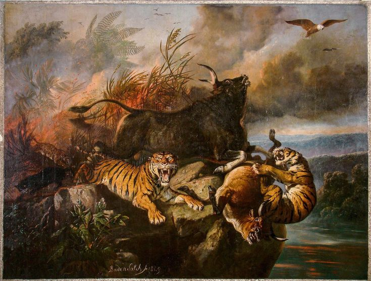
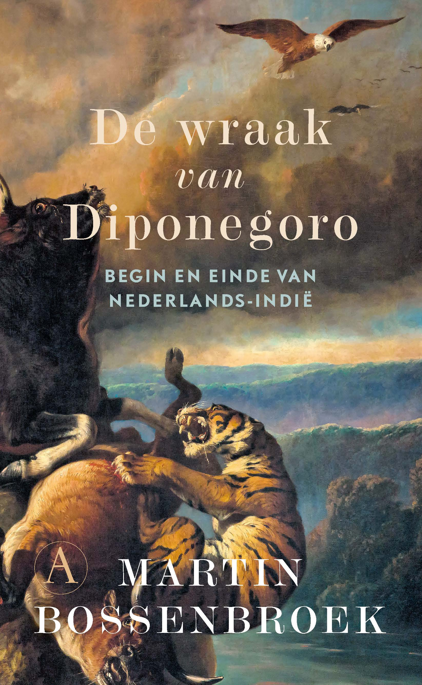

Introduction
In the last 15 years we have seen a small wave of official and very public Dutch apologies for their conduct in the Indonesian War of Independence (1945–1949).

A poster of the film 'The East' portraying Raymond 'De Turk' Westerling's role in the Indonesian war of Independence.
Indonesia had been a Dutch colony since the early 17
th century, and the Netherlands is believed to have committed several structural and systemic war crimes and machinations against its colony during its struggle for independence after the Second World War.
Only during these past 15 years has a wave of remorse arisen in the Netherlands; The Dutch made several official apologies for specific massacres as well as their overarching misbehaviours. A part of this renewed feeling of accountability within the Netherlands is the film-hit ‘De Oost’ or ‘The East’, which is one of the only Dutch-spoken films that has become very popular internationally. In this movie we see the atrocities that a historic character by the name of Raymond Westerling carried out against Indonesian civilians together with his commando force. Raymond publicly executed civilians, forced confessions and made his soldiers turn into cold killers. You could say that Raymond Westerling is a symbol for the Dutch atrocities during the Indonesian War of Independence.
That is the reason why I will be using Raymond Westerling and his elite group called the DPR as a starting point, or frame, to discuss some ways in which the Dutch have misconducted themselves. In other words, I will present some Dutch misbehaviours that relate to the story of Raymond Westerling. The reason for doing so is that we will better be able to understand the misbehaviours if we localize the story and limit our scope.
The severity of the war crimes
When Indonesia started showing signs of rebellion the Dutch conducted two operations called ‘Police Actions’, or ‘Politionele Acties’. This word suggests a peacekeeping force meant to restore order in a chaotic state.
In fact, these ‘Police Actions’ were large-scale military operations that sought to smash colonial aggression; at its peak this ‘police’ action had over 250,000 Dutch troops deployed in Holland’s former colony. There were several massacres, tortures and executions on civilian populations during this war. Operation Kraai is, for example, a campaign that is particularly known for its – documented – extrajudicial killings and repressions. But, Raymond Westerling was never part of this operation. Instead, hís regiment was small and consisted of elite commandos. They at times massacred entire villages suspected of harbouring guerilla fighters during its campaigns in Indonesia. The DST, or the Depot Speciale Troepen, started off as a small group of followers, but grew to be several 100s of soldiers in size. It made a name for itself for forced confessions, unprovoked violence and summary executions without trials. Their style of counterinsurgency received the name ‘The Westerling Method’.

A photograph of Raymond 'De Turk' Westerling with an Indonesian native fighting for the Dutch military beside him
Operation Kraai and the DST led by WWII veteran Raymond Westerling show that ‘Police Action’ is a misnomer. It was used to euphemize the Dutch involvement in Indonesia. All the while the Dutch were fighting no less than a war against its colony, they were involved in the Nürnburg trials and showed reprehension for ‘Jap camps’ in Indonesia as well as German war crimes during the Second world war. Some might call this hypocritical. So, the Dutch violence in Indonesia was misreported and misportrayed by the Netherlands on the world stage. The Dutch government and military leadership knew of many atrocities, but did not report them internationally.
This dichotamy between severe and cloaked violence and, conversely, the Dutch identification as a ‘liberal democracy’ is quite crude. In fact, the Netherlands were the inspiration and prelude to the French and American revolutionary movements (Dutch republic was established in 1588, well before the American and French revolutions starting in 1775 and 1787) and has a reputation for being a progressively liberal country (traditionally not banning books where other countries banned many, religiously liberal), So, this deception as wéll as the actual violence conducted in Indonesia hurts the Netherlands’ reputation. Some people might suggest it is ´not Dutch´ or stands in contrast to what Holland is known for, even historically. The fact that there were quite some conscientious objectors in Indonesia also shows that this dichotomy played out in the heads of some Dutch soldiers who were deployed to Indonesia (by the way, these objectors were imprisoned, something that their descendents are asking official apologies for).

A statue of Jan Pieterszoon Coen that is highly debated but still stands in Hoorn, North Holland, Netherlands.
In the light of this violence it is important to note that Dutch violence was not unique to Indonesia’s war of independence. Jan Pieterszoon Coen already carried out humongous massacres, if not ethnic cleansings befóre Indonesia became a Dutch colony. During his Bandang massacre in 1621 his military crackdown killed by estimation 14,000 Bandanese Indonesians. He has a statue in the Dutch town of Hoorn, which has sparked public debate during this wave of remorse for Dutch decolonization violence that rose up about 15 years ago. Another, more recent, massacre was the Kuta Reh massacre in 1904, where Dutch forces killed about 450 villagers during the Aceh war.
Pressured caused action, not Holland’s own remorse
Despite the Dutch deception about the scale of its violence in Indonesia, The United Nations became more and more aware of Dutch misconduct in its former colony. The United States began putting pressure on the Netherlands to stop their counterinsurgency in Indonesia from 1947 onwards. When the Netherlands did not listen to their appeals, the United States threatened to cut off its Marshall Plan to the Netherlands. Such international pressure caused the Netherlands to scale down its conflict and ultimately capitulate the Indonesian colony over to its newly formed republic. When it comes to the DST and Raymond Westerling this explains why the Dutch acted as if he was becoming ‘a rogue element’ and that lacked / lost supervision over his regiment.
But, historical evidence points out that even during Raymond Westerling´s last campaign against the Indonesian republic (the Apra coup attempt), the highest officials of the Dutch army were part of the chain of communications, and a whole network of Dutch officials helped him escape Indonesia after this campaign failed. This operation, known as the Apra coup d’etat attempt took place in 1950, one month after Netherlands had signed their 1949 peace treaty with Indonesia. The Dutch official involvement in the chain of communications as well as the complex and seemingly planned out island-hopping escape route, facilitated by some remaining Dutch officials raises questions. It indicates that it might possibly be so that the Netherlands were trying to subterfuge their own peace treaty one month after signing it. The Dutch involvenement with Westerling’s coup d’etat is debated. But, at the very least we may establish that, after Westerling had made it back to the Netherlands, he was never court martialed for going rogue and insubordination. Nor was he sued for warcrimes.

In the middle we see Talle and Andi Monji, who prosecuted the Dutch state in 2010 for its war crimes. Andi Monji was forced to watch his father's summary execution
Long after the conflict was over we may observe something that one can view as a repetition of the forced reaction that the United States strongarmed the Netherlands into. In 2010 there was a lawsuit regarding ‘the South Sulawesi massacres’. The Dutch state tried to argue that the statute of limitations had expired, but this was rejected by the court. The Netherlands’ attempt to deflect its responsibility makes their subsequent formal apologies and restitution payments (in 2011, 2013, 2020 by the prime minister and 2022 by the king) look more forced and less sincere. This repetition of not showing remorse out of its own will, but rather because of pressure, puts the Netherlands in a bad daylight when it comes to its colonial history; some people might think that the Netherlands greenwashes its official statements but does not sincerely mean them.
The Royal family
The most famous one of these apologies shortly mentioned above is the one made in 2022, by the Dutch king Willem Alexander. He was publicly ridiculed by the Dutch public for stumbling over the one word he came to say during his official state visit to Indonesia: ‘excuses’. He had a really hard time articulating the entirety of his key sentence within his short speech, and he begot public backlash for that in the Dutch media. But, something that is way, and way, more humilitiating to the royal family is the case surrounding the artwork of ‘Boschbrand’ made by an Indonesian artist called Raden Saleh around 1850.

The artwork Boschbrand by Indonesian native Raden Saleh. Finsished in either 1849 or 1850. Raden Saleh is not just celebrated as an artist but as a national hero to Indonesians, because he embedded anti-colonial themes in his artwork, despite him living at a time that the Netherlands controlled Indonesia. This article shows that the Dutch royal house was reprimanded for irresponsibly and perhaps even deceivingly selling off a highly sensitive artwork without informing the parliament.
When Dutch art historian Marie-Odette Scalliet went through a neglected Dutch royal collection in an attic in 2007 she rediscovered this painting after it had been considered lost for many years. The painting was restored and presented to the Dutch royal family once more. But what happened next caused upheaval not only in Indonesia but also in the Netherlands itself: the Dutch royal family sold the artwork in 2014 to the National Gallery of Singapore for an estimated $3–5 million.

The sale of Saleh's painting sparked controversy in the Netherlands, as many considered the painting a vital piece of colonial-era heritage. Martin Bossenbroek wrote about this sale in his book
When we adhere this story to our frame of Raymond Westerling we have to, inevitably, discuss prince consort Bernard, the husband of queen Juliana. His involvement in the Indonesian Independence War has never been proven, but there have persistently been rumors and allegations about his invovlement in it. In the film ‘The East’ prince Bernard is in fact hinted towards by a shady character giving out orders to Raymond Westerling in a high-profile military meeting. Nothing conclusive is to be said about prince Bernard’s involvement in Raymond Westerling DST group, but the persisent rumours do damage Dutch reputation, and especially that of the royal house. Another persistent rumour is that prince Bernard was a member of the nazi party. Even though Bernard and all royals have denied his nazi involvement, it has recently been proven that Bernard was indeed member of the NSDAP, or the Nazi party. In 2023 an NSDAP membership card was found and authenticated that was held by prince Bernard for decades after the Second World War. This find suggests that Bernard lied when he laid his hand on the bible and promised he had never been a paid member of the NSDAP.
Backstabbing
Let us go over the subject of ´backstabbing´, and explore several examples of such deception on different levels. What springs to mind immediately is that just before operation Kraai (1948) and operation Product (1947) the Netherlands had signed treaties, such as the Linggadjati and Renville agreement. But then immediately after their signing, they violated these treaties and launched surprise military attacks (the operations Kraai and Product). We might suggest that Raymond Westerling also backstabbed his elite counterinsurgent group DST during the 1950 coup attempt: he left behind more than 100 soldiers who were arrested and imprisoned by the Indonesian republic. This backstab is of course not against Indonesians, but it can be seen as a backstab from Westerling against his own men and, by extension, paint his character. Another move that we might view as a ‘backstab’ by Raymond Westerling is when he invited villagers to come forward peacefully during his South Sulawesi campaign, promising amnesty—but subsequently executed suspects without trial.
But the Dutch government post-war conduct might also be seen as having backstabbed the Indonesians. In the Dutch counterinsurgency forces, not only Dutch soldiers were fighting. They were in fact supplemented by native soldiers who did a lot of fighting for them. A lot of these native soldiers came from the Maluku / Moluccan islands. This was a region in Indonesia that had a tradition of supporting the Netherlands, and they had helped them out very much during the Independence war. The Mollucans were generally Christian as opposed to Muslim, and there were many other differences between these people and the rest of what we know now as the one republic of Indonesia. In any case, because the Moluccans and similar Indonesian natives felt unsafe in the new republic due to their support for the Netherlands, they were offered to come to Holland where they could make a new, happy, life for themselves and partake in the community. What one might view as a backstab by the Dutch government is that the Dutch put them in isolated camps that were often, previously, concentration camps, they forced the Indonesians to heavily assimilate rapidly without support, and they were not welcomed by Dutch citizens, oftentimes even being on the receiving end of racism. The Dutch government as well as the Dutch society (probably to a lesser extent) had mistreated these Indonesians so poorly for such a long time that a large part of this group of expats became ‘radicalized’ and very angry with the Netherlands. The Moluccas and some other Indonesians performed several terroristic acts in the Netherlands as a result of this decade-long marginalization. There were several train hijackings, there was an assassination attempt on Queen Juliana, the Indonesian embassy was attacked in the Hague, and in Wassenaar Moluccan activists occupied the Indonesian consulate while taking hostages. Do note that these terrorist attacks mainly took place in the 1970s! It shows you for how long exactly the Dutch government had – reasonably said – mistreated these Indonesians, while they were the ones fighting fór their cause in the Indonesian Independence War. Yet again, one could say this prolonged mistreatment humiliates the Dutch state and its reputation.
Conclusion
All in all, while taking Raymond Westerling as a frame, a red thread in our story, we have explored how the Netherlands has damaged its own reputation through its conduct before, during and after the Indonesian Independence War. I do not seek to put shame on the Netherlands, and in fact I remain apolitical in my opinion regarding this situation, but it is still very important to lay out these deceptions, atrocities and perhaps even evil acts.
Further reading
Mentioned in the article: The Dutch reputation enabling them to become the sole Western trading partners with Japan for roughly 200 years; Sakoku Japan